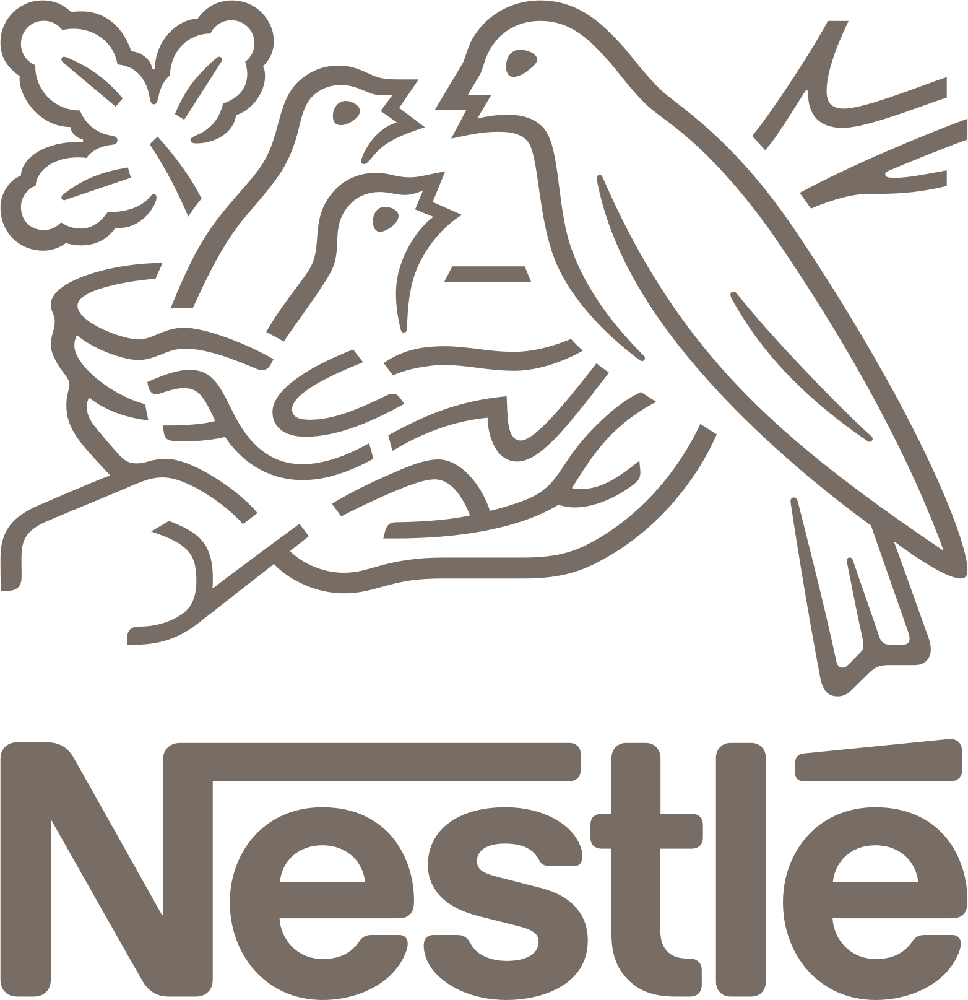
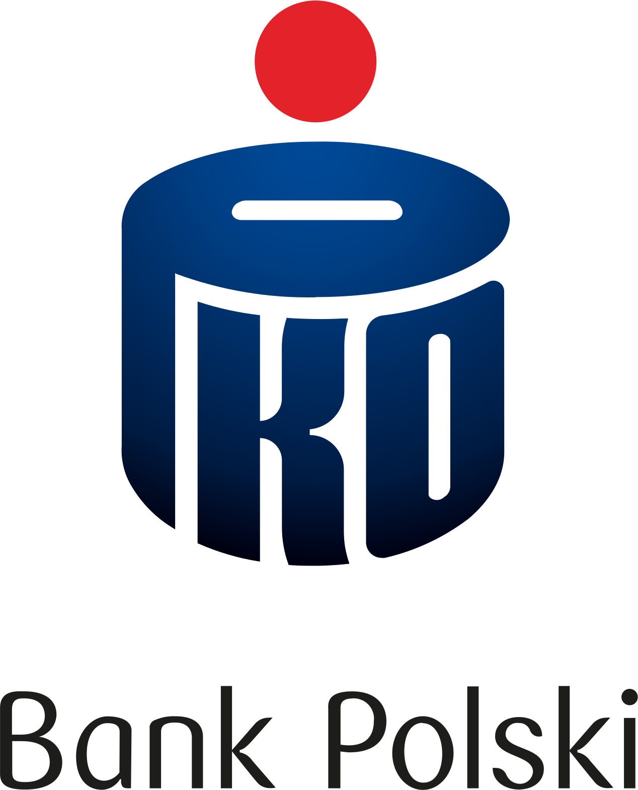

We run the work of modern companies.
Ludzie i AI.
Jedna nadzorowana warstwa procesowa.
Opisz proces językiem biznesu. 2to2 zbuduje aplikację, która go wykonuje — z regułami, akceptacjami i pełnym śladem audytowym.
Jak jest dzisiaj
Najważniejsza praca w firmie to ta, której nikt nie pilnuje.
Rozproszona Krytyczne procesy żyją w mailach, arkuszach i w głowach ludzi.
Poszatkowana Narzędzia do automatyzacji nie rozmawiają ze sobą. Praca zacina się między systemami i zespołami.
Bez nadzoru Asystenci AI działają bez śladu audytowego i bez odpowiedzialności za skutki.
Nie do przyjęcia Bezpieczeństwo, zgodność i ryzyko nie pozwalają AI działać swobodnie.
Sama AI nie naprawi zepsutej pracy. Praca potrzebuje nadzorowanej warstwy procesowej — i sposobu, żeby zbudować ją bez roku programowania.
2to2 App Creator
Twoja dokumentacja już opisuje tę aplikację. 2to2 ją buduje — i pilnuje, żeby obie strony się zgadzały.
Opisz proces tak, jak opisujesz go audytorowi. App Creator zamienia ten opis w strukturalną specyfikację i działającą aplikację. To dwa widoki jednego modelu: zmień jedną stronę, a druga idzie za nią.
Rejestracja dostawcy
Zwykłe zdania po polsku. Żadnej dokumentacji technicznej.
Generatory AI kompilują pomysł do kodu. My kompilujemy go do platformy procesowej, którą rozwijamy od 20 lat. Kod jest jednorazowy. Aplikacja na 2to2 zostaje edytowalna, nadzorowana i audytowalna.
2to2 to warstwa operacyjna dla nadzorowanych procesów.
Twórz aplikacje procesowe. Osadzaj je wszędzie. Kontroluj każdą akcję.
Buduj aplikacje procesowe
Projektuj i wdrażaj aplikacje, które prowadzą realną pracę — między zespołami, narzędziami i AI.
Osadzaj wszędzie
Umieszczaj aplikacje procesowe w portalach, intranecie, Teams lub we własnych produktach — bez przepisywania.
Pracuj pod kontrolą
Ludzie i Digital Workers wykonują kroki w jednej nadzorowanej warstwie — z logiem, akceptacją i audytem.
Apps that run work.
AI nie powinno zastępować procesów. Powinno pracować wewnątrz nich.
Digital Workers wykonują. Procesy nadzorują. Firma zostaje przy sterach.
Nadzorowane. Audytowane. Zaakceptowane.
Dowód
Od ponad 20 lat na naszych platformach działają krytyczne procesy biznesowe.




Microsoft 365
Procesy Datapolis działające wewnątrz SharePoint Online i Microsoft 365 — w codziennej pracy zespołów.
Środowiska on-premise
Datapolis Process System wdrożony w najbardziej regulowanych branżach — energetyka, administracja, infrastruktura krytyczna.
Startupy AI obiecują przyszłość. My utrzymujemy systemy, od których firmy zależą już dziś.
Co działa na Datapolis
AI odczytuje i klasyfikuje faktury. Proces prowadzi akceptacje i księgowanie w ERP.
Na 2to2Digital Workers zbierają dane. Proces weryfikuje i aktywuje nowego klienta.
Na 2to2AI klasyfikuje zgłoszenia. Proces przypisuje, eskaluje i zamyka tickety.
Na 2to2AI wyciąga warunki z treści. Proces prowadzi przeglądy, akceptacje i podpis.
Na 2to2Digital Workers obsługują formularze. Proces prowadzi onboarding, zmiany i offboarding.
Na 2to2Zacznij tutaj
Pokaż nam proces, który chcesz wdrożyć.
Przyślij dokumentację, którą już masz — procedurę, politykę, formularz. Zamienimy ją w strukturalną specyfikację 2to2 i pokażemy aplikację, która z niej powstaje.
- Działająca aplikacja zbudowana z Twojej własnej dokumentacji
- Reguły, role, akceptacje i ślad audytowy od pierwszego dnia
- Prosta odpowiedź, co pasuje do 2to2, a co nie
Wolisz mail? office@datapolis.com
Napisz do nas
Odpowiadamy w ciągu 1–2 dni roboczych.
Ten formularz sam jest aplikacją procesową 2to2. Twoja wiadomość wchodzi w nadzorowany proces — z przypisaniem, statusem i odpowiedzią.